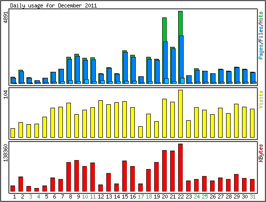

Statistics for mkpteam.com
Last record:
21:59:52 12/02/11
Generated at:
02:02:08 12/03/11
[Index]
[Overview]
[Summary]
[Daily Statistics]
[Hourly Statistics]
[URLs]
[User]
[Searchengines]
[Server Internals]

Daily Statistics
Day
Hits
Files
Pages
Visits
KBytes
1
428
339
27
25
14904
2
901
794
50
44
40942
Output generated by
modlogan 0.5.7

 Output generated by modlogan 0.5.7
Output generated by modlogan 0.5.7